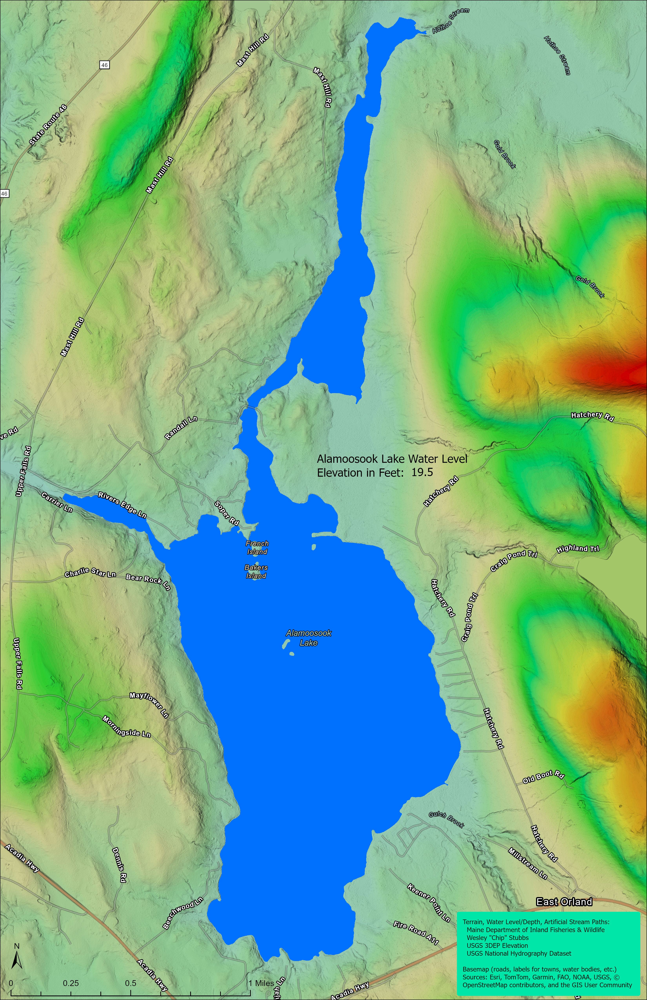
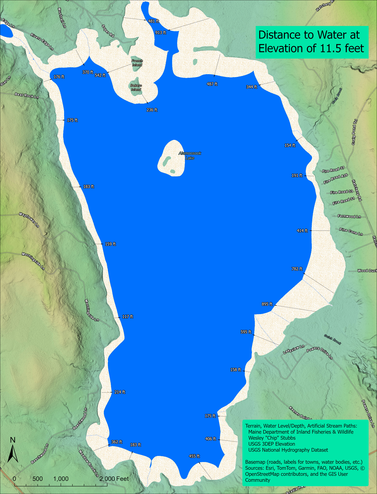

Mapping Possible Consequences of Dam Removal
TODDY POND
ALAMOOSOOK LAKE
MODEL FOR ESTIMATING THE SIZE AND CONFIGURATION OF
TODDY POND AND ALAMOOSOOK LAKE DUE TO DECREASES IN THE WATER LEVEL
Depths

Water Levels

Distance to Shoreline after 8 ft Drop in the Water Level
Property Value and Tax